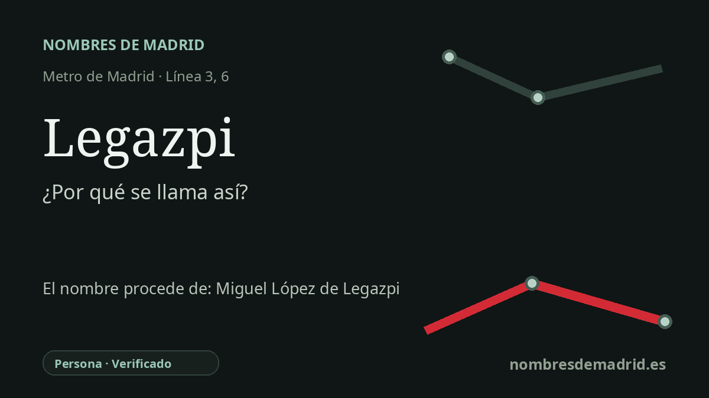

Publicado el · Investigación de Nombres de Madrid · Cómo verificamos cada origen · 7 fuentes consultadas
Respuesta rápida
La estación de Legazpi toma su nombre de la plaza de Legazpi, registrada oficialmente por el callejero madrileño en 1926 y dedicada a Miguel López de Legazpi, el guipuzcoano que dirigió la expedición española que consolidó la presencia colonial en Filipinas y convirtió Manila en capital española en 1571.
La historia del nombre
El origen del nombre de la estación está bien documentado: Legazpi procede de la plaza de Legazpi, la glorieta situada sobre la estación de Metro. El Callejero Municipal de Madrid registra la plaza de Legazpi como vía oficial vigente y le asigna fecha de existencia de 16 de julio de 1926. El mismo callejero conserva una ficha separada para la estación de Metro Legazpi, con inicio en la plaza de Legazpi y con las líneas 3 y 6 indicadas en las observaciones.
La plaza recuerda a Miguel López de Legazpi, figura guipuzcoana nacida en Zumarraga y fallecida en Manila el 20 de agosto de 1572. La Real Academia de la Historia lo incluye entre los personajes biográficos que dan nombre a estaciones de la red de Metro y enlaza la estación con su biografía. Legazpi es recordado por dirigir la expedición enviada desde Nueva España que consolidó una presencia colonial española estable en el archipiélago filipino.
La cronología principal combina el siglo XVI con la expansión madrileña del siglo XX. La expedición de Legazpi llegó a Filipinas en 1565, fundó el asentamiento español de Cebú y más tarde estableció Manila como capital colonial en 1571. La ruta de retorno por el Pacífico que hizo posible el sistema Manila-Acapulco se logró dentro de aquella expedición, pero se atribuye con más precisión a Andrés de Urdaneta y al tornaviaje; por eso no conviene presentar a Legazpi como creador único de la ruta del Galeón de Manila.
El topónimo madrileño tiene además una capa muy local. La plaza de Legazpi creció junto al antiguo Matadero y Mercado Municipal de Ganados, un gran complejo industrial iniciado en 1911 e inaugurado en 1924, hoy transformado en Matadero Madrid, centro de creación contemporánea. Así, el nombre funciona a la vez como conmemoración biográfica y como marca del antiguo borde industrial del sur de Arganzuela, junto al Manzanares.
En la historia del Metro, Legazpi no pertenece a la inauguración de la línea 3 de 1936. El primer tramo de esa línea abrió en 1936 entre Sol y Embajadores; después avanzó hacia el sur hasta Delicias en 1949 y hasta Legazpi en 1951. La línea 6 llegó a Legazpi con el tramo Pacífico-Oporto en 1981, convirtiendo el nombre de una estación terminal junto al río en uno de los grandes puntos de intercambio del sur de la red madrileña.